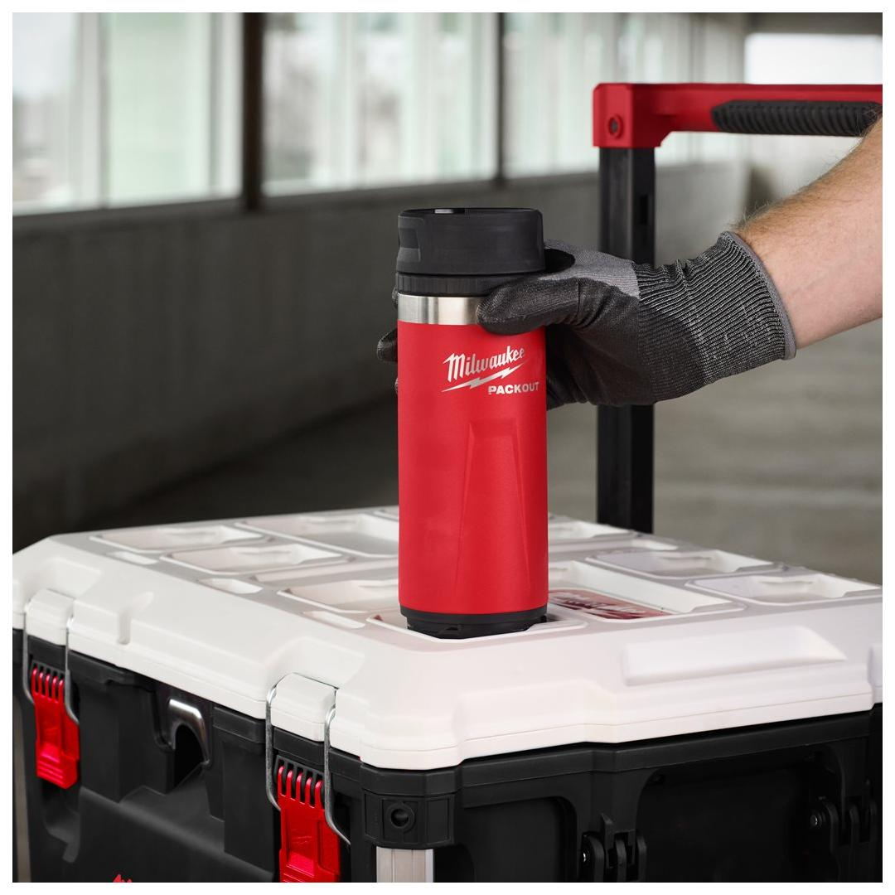
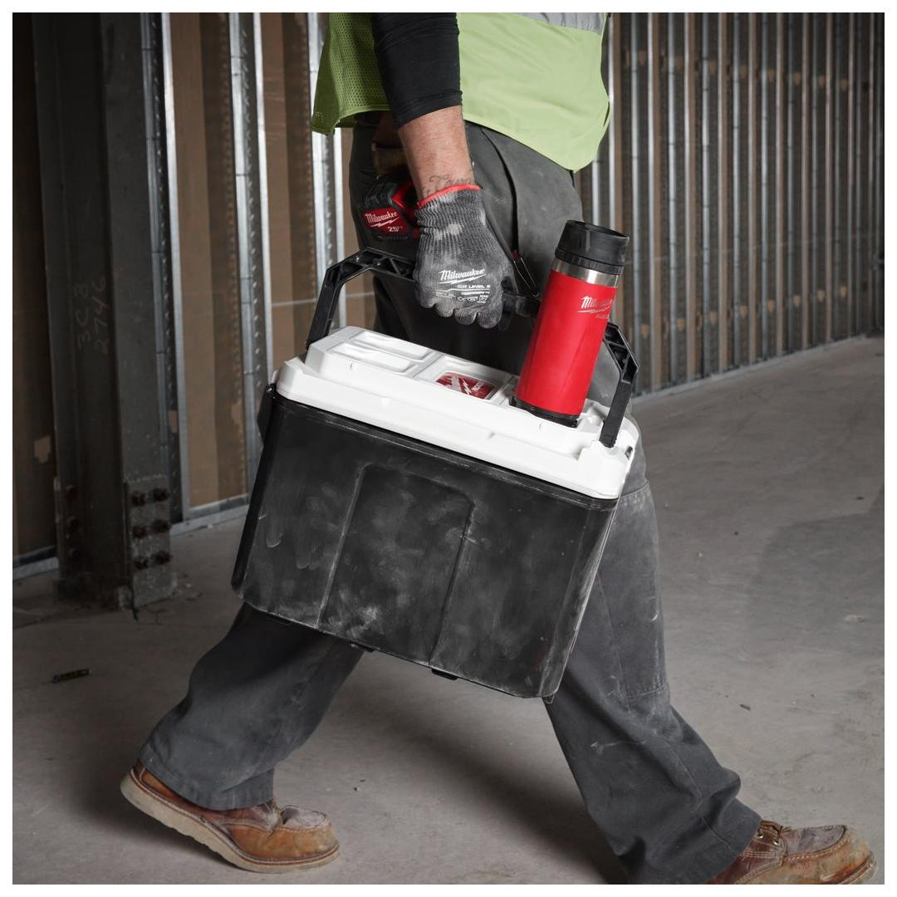
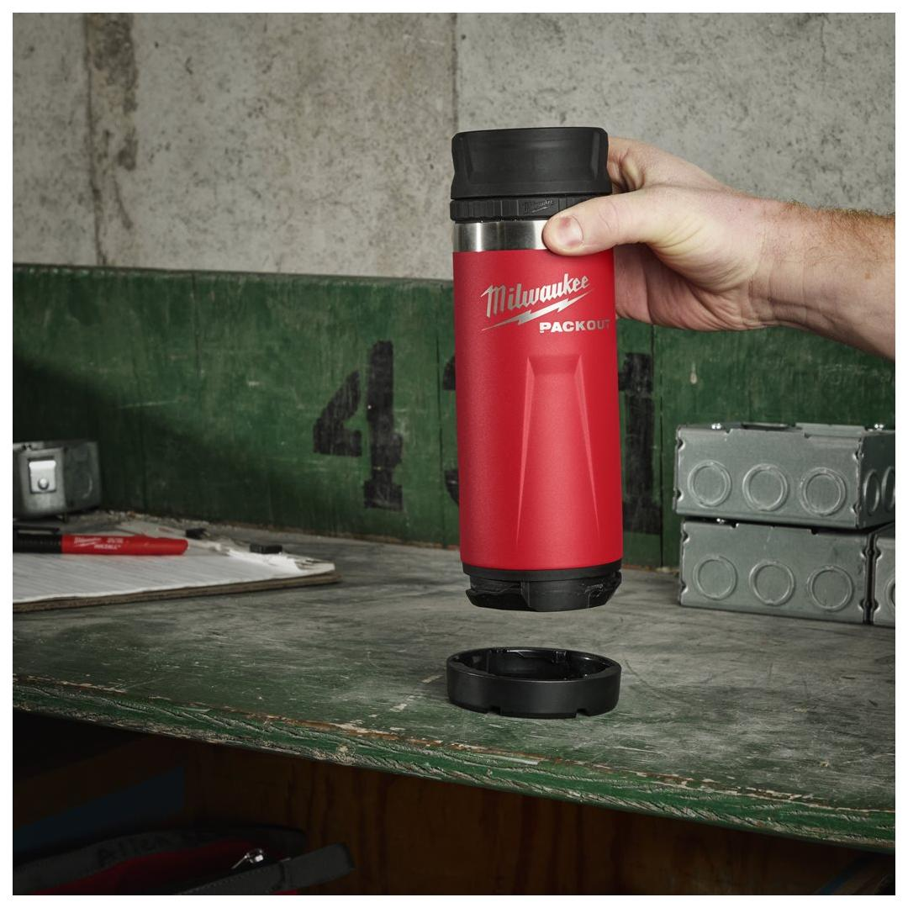
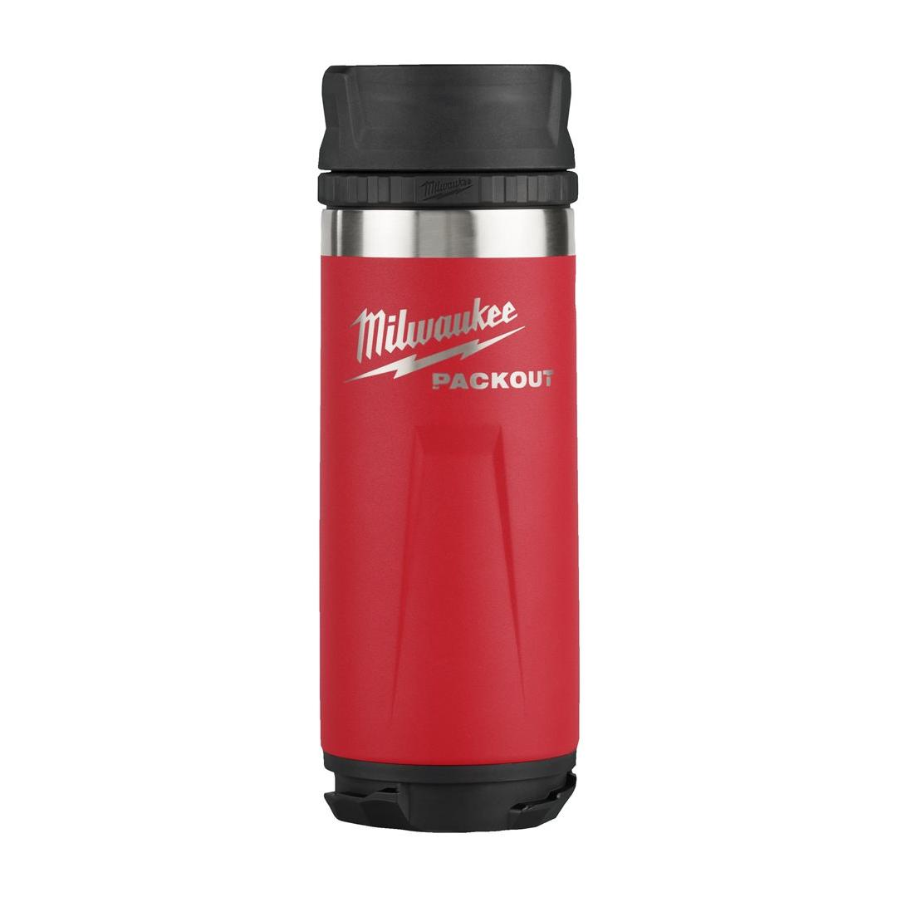

Milwaukee | Packout Bottle 532 ml Sip Lid Red
4932493473





Features
- Double wall vacuum insulation for all day hot & cold retention.
- 18/8 stainless steel for highest durability.
- Dishwasher safe.
- Lids are compatible throughout all PACKOUT™ bottles and mugs.
- Twist and lock mechanism for connectivity with all PACKOUT™ components.
- Part of the PACKOUT™ modular storage system.
Information
| Dimensions (mm) | 229 x 79 x 79 |
| MOQ | 8 |
| Pack quantity | 1 |